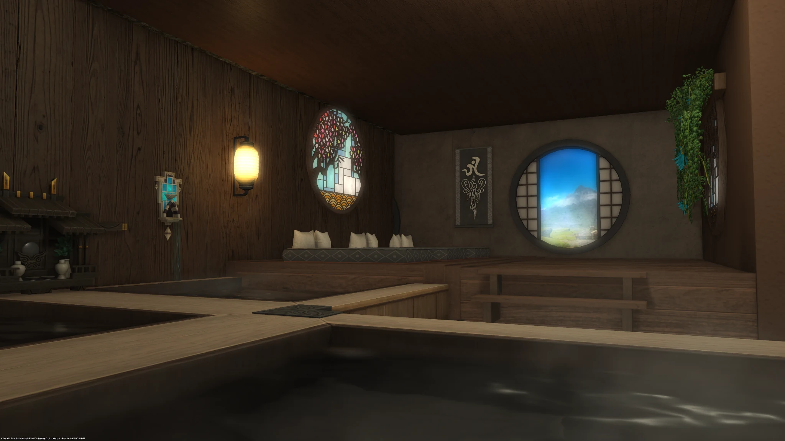
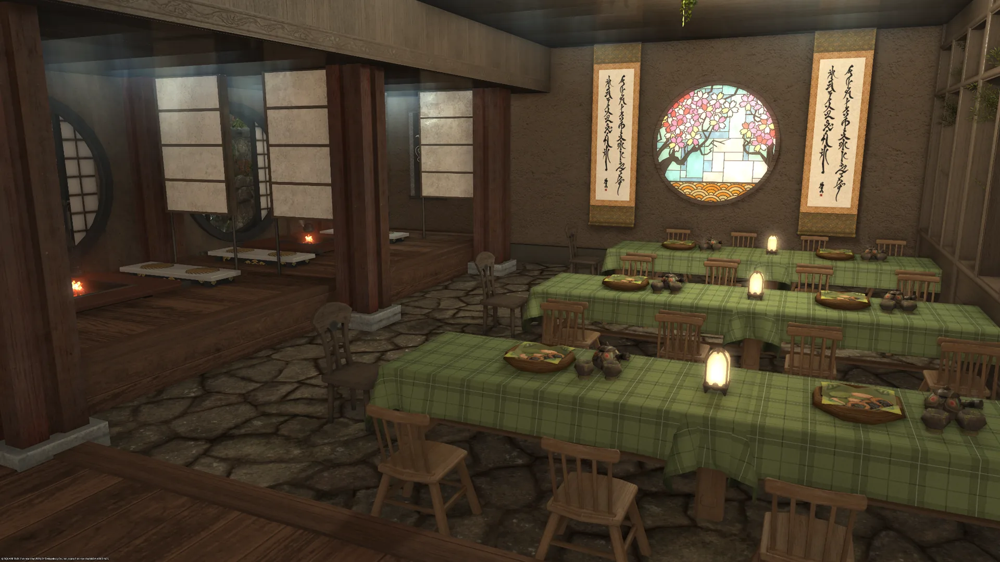
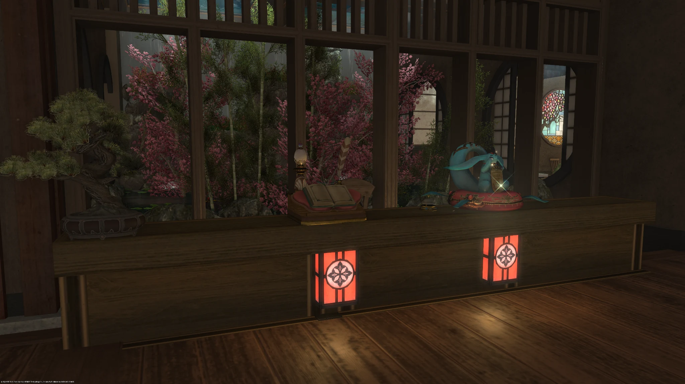

一館之內，四種安歇
眠楓館以和風溫泉會館為設計核心，館內依照旅人的需求，安排餐食、泡湯、按摩與睡眠陪伴。
接待過程重視安靜、禮貌與沉浸感。館員會先確認偏好，再用適合的步調陪伴每一段休憩時光。
不追求喧鬧，只留下一個能讓旅人慢下來的夜晚。
在一方和風空間裡，備妥餐食、暖湯、療癒與安眠。
眠楓館以和風溫泉會館為設計核心，館內依照旅人的需求，安排餐食、泡湯、按摩與睡眠陪伴。
接待過程重視安靜、禮貌與沉浸感。館員會先確認偏好，再用適合的步調陪伴每一段休憩時光。
不追求喧鬧，只留下一個能讓旅人慢下來的夜晚。

暖湯、木香與柔和燈光交織，在同一處空間享受泡湯與按摩服務，讓旅途中的疲憊慢慢沉澱。

館內主要用餐空間，備有餐點、甜點與飲品；舞台亦會不定期舉辦演出、活動與交流聚會。

旅人的夜晚由此開始。報到、指名、點餐與諮詢皆可在此完成，館員會依需求引導至合適的空間。